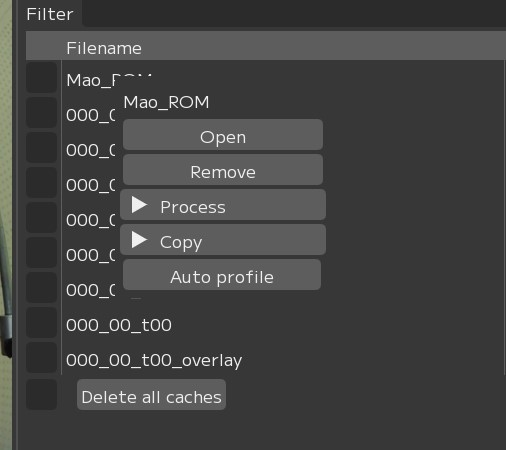
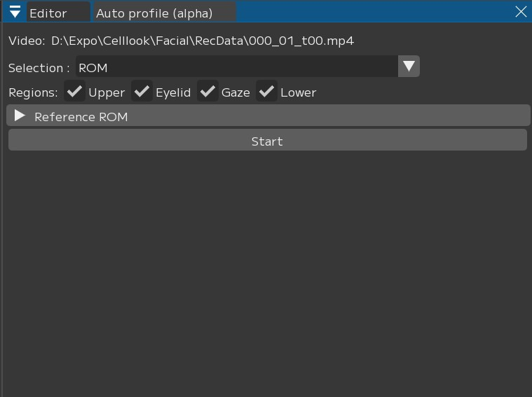

オートピックアップ（ベータ版）
FCSは、読み込んだ動画内の適切なフレームを自動でピックアップする機能を導入しました。
これにより、作業者の負担がより軽減され、最小限の労力で最大限にFCSを活用できるようになります。
Attention
この機能は現在開発中のベータ版であり、正常に動作しない場合があります。ご使用中の不具合やご意見などのフィードバックを皆様から頂けますと幸いです。
オートピックアップ機能の使い方
オートピックアップ機能はVideosウィンドウの動画名右クリックメニューから起動できます。

Auto profileボタンを押すとオートプロファイルウィンドウが表示されます。

このウィンドウでは、動画から自動的にフレームを選択できます。
ここでは、動画のパスが正しく選択されているかどうか確認し、どのようなフレームをピックアップするかについてオプションを設定してください。
ピックアップの方法について
現在、オートプロファイルには2つのフレーム抽出モードが実装されています。用途に合わせて「General」と「ROM」で切り替え可能です。
General は、どのような動画でも使用できるように設計されています。動画内で顔の表情全体が明瞭に映っているフレームを自動的に抽出します。
Generalでは、選択した動画へ追加したいプロファイルの数を自由に設定できます。動画全体を分析し、指定した数の表情を自動的にピックアップします。
ROMは、スターターキットに同梱されているPDF一覧表（ROM.pdf）に載っている顔の表情と一致する動画のフレームを自動的に抽出します。
ROM では、動画内で探したいROMの表情をチェックボックスで選択できます。選択した表情を元に、動画内で最も近い表情のフレームをピックアップします。
今後、独自のROMに基づく表情をピックアップできるバージョンをリリース予定です。